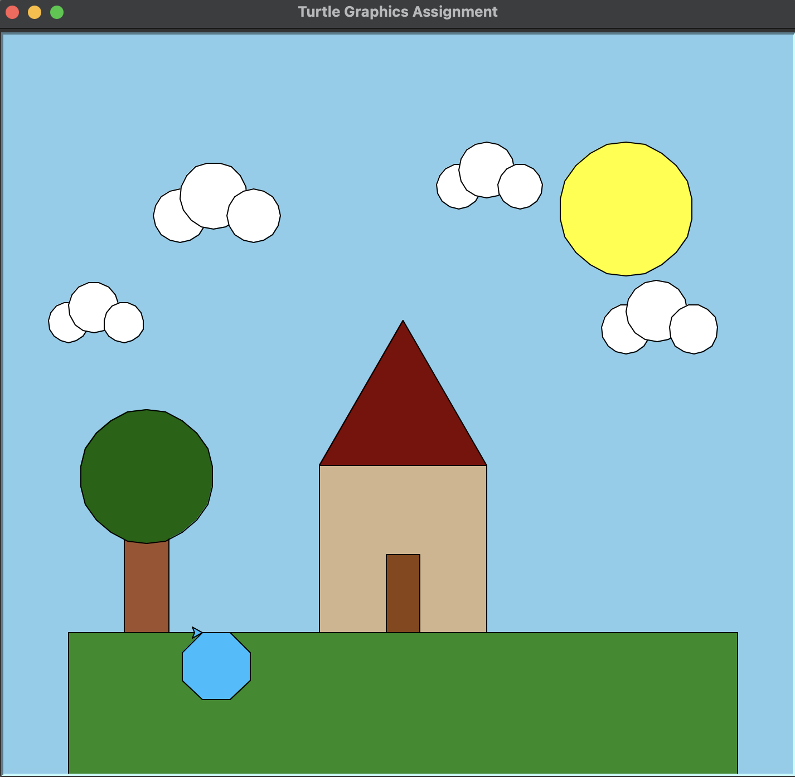

This was the more complicated version of Project 1. We were using the same ideas with the turtle package, but we had to make a more complicated scene using more commands and code. This was a good opportunity for me to get more aquainted with the turtle package and all that it could do.

The image above is the final product of this project. It was an updated version of Project 2, which simply showed a simple scene with grass, a sun, a tree, and a house all built by the turtle package and colored accurately. For the next step in Project 3, I added a few clouds to the sky as well as a pond on the ground. This helped me get better equipped with the turtle package. It also gave me a better understanding of where everything in the screen is in terms of the x/y axis.